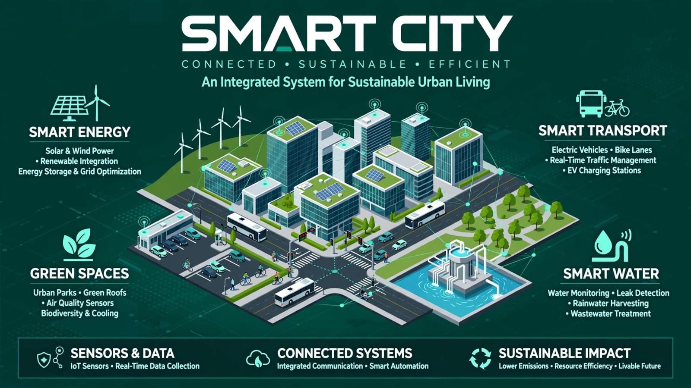
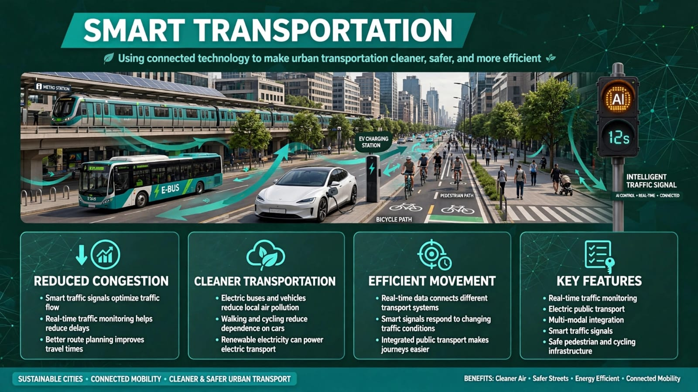
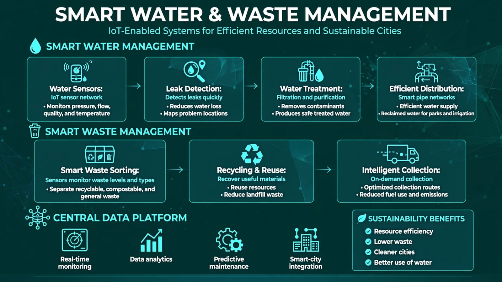
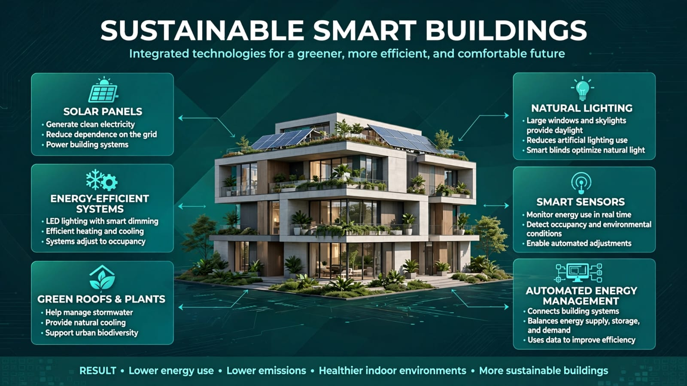

01 • The Smart City
Technology Meets the City

02 • Smart Transportation
Moving People Efficiently

03 • Smart Resources
Managing Resources Intelligently

04 • Connected Infrastructure
Data Can Improve Decisions

A smart city uses technology thoughtfully to improve life for its people and its environment.